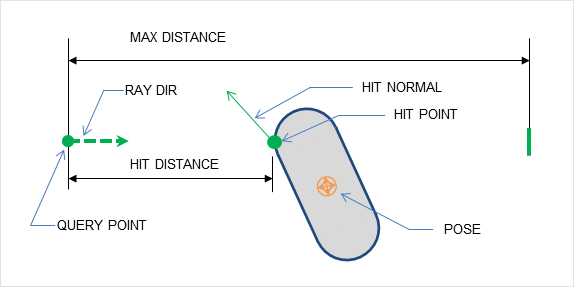
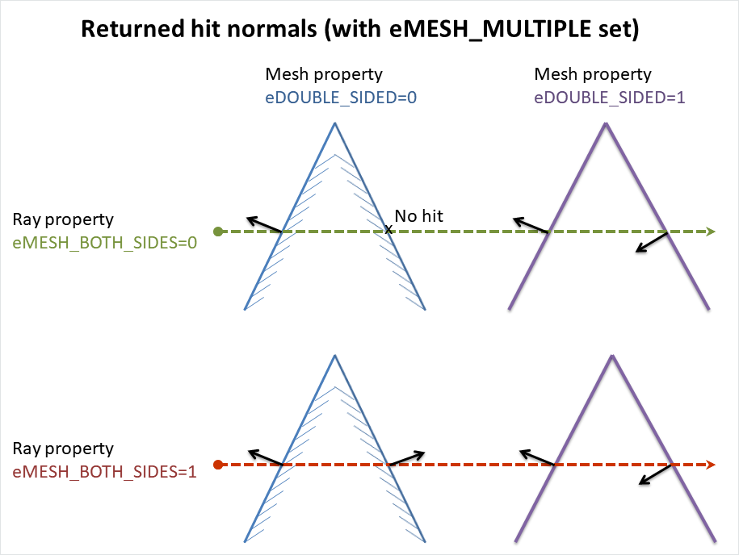
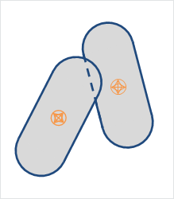
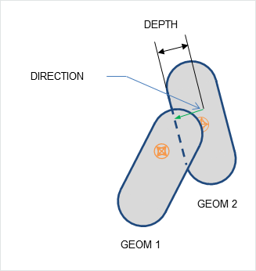
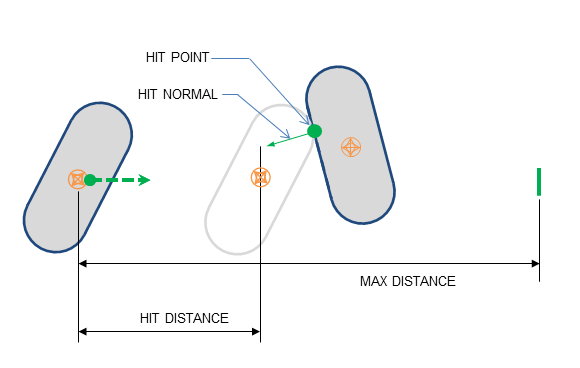
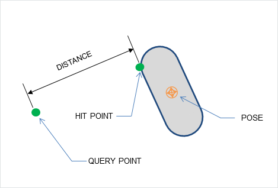
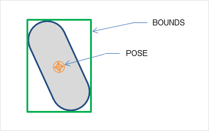

Geometry Queries¶
Introduction¶
This chapter describes how to use PhysX' collision functionality with individual geometry objects. There are four main kinds of geometry queries:
- raycasts ("raycast queries") test a ray against a geometry object.
- sweeps ("sweep queries") move one geometry object along a line to find the first point of intersection with another geometry object.
- overlaps ("overlap queries") determine whether two geometry objects intersect.
- penetration depth computations ("minimal translational distance queries", abbreviated here to "MTD") test two overlapping geometry objects to find the direction along which they can be separated by the minimum distance.
In addition, PhysX provides helpers to compute the AABB of a geometry object, and to compute the distance between a point and a geometry object.
In all of the following functions, a geometry object is defined by its shape (a PxGeometry structure) and its pose (a PxTransform structure). All transforms and vectors are interpreted as being in the same space, and the results are also returned in that space.
Raycasts¶
A raycast query traces a point along a line segment until it hits a geometry object. PhysX supports raycasts for all geometry types.
The following code illustrates how to use a raycast query:
PxRaycastHit hitInfo;
PxU32 maxHits = 1;
PxHitFlags hitFlags = PxHitFlag::ePOSITION|PxHitFlag::eNORMAL|PxHitFlag::eUV;
PxU32 hitCount = PxGeometryQuery::raycast(origin, unitDir,
geom, pose,
maxDist,
hitFlags,
maxHits, &hitInfo);
The arguments are interpreted as follows:
- origin is the start point of the ray.
- unitDir is a unit vector defining the direction of the ray.
- maxDist is the maximum distance to search along the ray. It must be in the [0, inf) range. If the maximum distance is 0, a hit will only be returned if the ray starts inside a shape, as detailed below for each geometry.
- geom is the geometry to test against.
- pose is the pose of the geometry.
- hitFlags specifies the values that should be returned by the query, and options for processing the query.
- maxHits is the maximum number of hits to return.
- hitInfo specifies the PxRaycastHit structure(s) into which the raycast results will be stored.
The returned result is the number of intersections found. For each intersection, a PxRaycastHit is populated. The fields of this structure are as follows:
PxRigidActor* actor;
PxShape* shape;
PxVec3 position;
PxVec3 normal;
PxF32 distance;
PxHitFlags flags;
PxU32 faceIndex;
PxF32 u, v;
Some fields are optional, and the flags field indicates which members have been filled with result values. The query will fill fields in the output structure if the corresponding flags were set in the input - for example, if the PxHitFlag::ePOSITION is set in the input hitFlags, the query will fill in the PxRaycastHit::position field, and set the PxHitFlag::ePOSITION flag in PxRaycastHit::flags. If the input flag is not set for a specific member, the result structure may or may not contain valid data for that member. Omitting the eNORMAL and ePOSITION flags in the input can sometimes result in faster queries.
For a raycast which is not initially intersecting the geometry object, the fields are populated as follows (optional fields are listed together with the flag that controls them):
- actor and shape are not filled (these fields are used only in scene-level raycasts, see Scene Queries).
- position (PxHitFlag::ePOSITION) is the position of the intersection.
- normal (PxHitFlag::eNORMAL) is the surface normal at the point of intersection.
- distance is the distance along the ray at which the intersection was found.
- flags specifies which fields of the structure are valid.
- faceIndex is the index of the face which the ray hit. For triangle mesh and height field intersections, it is a triangle index. For convex mesh intersections it is a polygon index. For other shapes it is always set to 0xffffffff.
- u and v (PxHitFlag::eUV) are the barycentric coordinates of the intersection. These fields (and the flag) are supported only for meshes and heightfields.
The position field is related to the barycentric coordinates via the following formula, where v0, v1 and v2 are the vertices from the hit triangle:
position = (1 - u - v)*v0 + u*v1 + v*v2;
This mapping is implemented in PxTriangle::pointFromUV().
See Geometry for details of how to retrieve face and vertex data from triangle meshes, convex meshes and height fields using face and vertex indices.
Exceptions to the above behavior may apply if a ray starts inside an object, in which case PhysX may not be able to compute meaningful output values for some fields. In these cases the field will remain unmodified and the corresponding flag will not be set. Specific details vary by geometry type, and are described below.
The exact conditions for raycast intersections are as follows:
Raycasts against Spheres, Capsules, Boxes and Convex Meshes¶
For solid objects (sphere, capsule, box, convex) at most 1 result is returned. If the ray origin is inside a solid object:
- the reported hit distance is set to zero.
- the hit normal is set to be the opposite of the ray's direction, and the PxHitFlag::eNORMAL flag is set in the output.
- the hit impact position is set to the ray's origin and the PxHitFlag::ePOSITION flag is set in the output.
If the start or end point of a ray is very close to the surface of the object, it may be treated as being on either side of the surface.
Raycasts against Planes¶
For raycasts, a plane is treated as an infinite single-sided quad that includes its boundary (note that this is not the same as for overlaps). At most one result is returned, and if the ray origin is behind the plane's surface, no hit will be reported even in case the ray intersects the plane.
If the start or end point of a ray is very close to the plane, it may be treated as being on either side of the plane.
Raycasts against Triangle Meshes¶
Triangle meshes are treated as thin triangle surfaces rather than solid objects. They may be configured to return either an arbitrary hit, the closest hit, or multiple hits.
- if maxHits is 1 and PxHitFlag::eMESH_ANY is not set, the query will return the closest intersection.
- if maxHits is 1 and PxHitFlag::eMESH_ANY is set, the query will return an arbitrary intersection. Use this when it is sufficient to know whether or not the ray hit the mesh, e.g. for line-of-sight queries or shadow rays.
- if maxHits is greater than 1, the query will return multiple intersections, up to maxHits. If more than maxHits intersection points exist, there is no guarantee that the results will include the closest. Use this for e.g. wall-piercing bullets that hit multiple triangles, or where special filtering is required. Note that PxHitFlag::eMESH_MULTIPLE must be used in this case.
In general "any hit" queries are faster than "closest hit" queries, and "closest hit" queries are faster than "multiple hits" queries.
By default, back face hits (where the triangle's outward-facing normal has a positive dot product with the ray direction) are culled, and so for any triangle hit the reported normal will have a negative dot product with the ray direction. This behavior may be modified by the mesh instance's PxMeshGeometryFlag::eDOUBLE_SIDED flag and the query's PxHitFlag::eMESH_BOTH_SIDES flag:
- if either PxMeshGeometryFlag::eDOUBLE_SIDED or PxHitFlag::eMESH_BOTH_SIDES is set, culling is disabled.
- if PxMeshGeometryFlag::eDOUBLE_SIDED is set, the reported normal is reversed for a back face hit.
For example a transparent glass window could be modeled as a double-sided mesh, so that a ray would hit either side with the reported normal facing opposite to the ray direction. A raycast tracing the path of a bullet that may penetrate the front side of a mesh and emerge from the back could use eMESH_BOTH_SIDES to find both front and back facing triangles even when the mesh is single-sided.
The following diagram shows what happens with different flags, for a single raycast intersecting a mesh in several places.
{kind=link}
To use PxHitFlag::eMESH_BOTH_SIDES for selected meshes rather than all, set the flag inside the PxQueryFilterCallback.
If the start or end point of a ray is very close to the surface of a triangle, it may be treated as being on either side of the triangle.
If the start or end point of a ray is very close to the surface of a triangle, it may be treated as being on the either side of the triangle.
Raycasts against Heightfields¶
- Heightfields are treated the same way as triangle meshes with normals oriented (in shape space) in +y direction.
- Double-sided heightfields are treated the same way as double sided triangle meshes.
Overlaps¶
Overlap queries simply check whether two geometry objects overlap. One of the geometries must be a box, sphere, capsule or convex, and the other may be of any type.
The following code illustrates how to use an overlap query:
bool isOverlapping = overlap(geom0, pose0, geom1, pose1);
Overlaps do not support hit flags and return only a boolean result.
- A plane is treated as a solid half-space: that is, everything behind the plane is considered part of the volume.
- Triangle meshes are treated as thin triangle surfaces rather than solid objects.
- Heightfields are treated as triangle surface. Overlap geometries that do not intersect with the heightfield surface will not report a hit.
If more than a boolean result is needed for meshes and heightfields, use the PxMeshQuery API instead (see PxMeshQuery).
Penetration Depth¶
When two objects are intersecting, PhysX can compute the minimal distance and direction by which the objects must be translated to separate them (this quantity is sometimes referred to as MTD, for minimum translational distance, as it is the vector of minimal length by which translation will separate the shapes). One geometry object must be a box, sphere, capsule or convex mesh, and the other may be of any type.
The following code illustrates how to use a penetration depth query:
bool isPenetrating = PxGeometryQuery::computePenetration(direction, depth,
geom0, pose0,
geom1, pose1);
The arguments are interpreted as follows:
- direction is set to the direction in which the first object should be translated in order to depenetrate from the second.
- distance is set to the distance by which the first object should be translated in order to depenetrate from the second.
- geom0 is the first geometry.
- pose0 is the transform of the first geometry.
- geom1 is the second geometry.
- pose2 is the transform of the second geometry.
The function returns true if the objects are penetrating, in which case it sets the direction and depth fields. Translating the first object by the depenetration vector D = direction * depth will separate the two objects. If the function returns true, the returned depth will always be positive or zero. If objects do not overlap, the function returns false, and the values of the direction and distance fields are undefined.
For simple (convex) shapes, returned results are accurate.
For meshes and heightfields, an iterative algorithm is used and dedicated functions are exposed in PxExtensions:
PxU32 nb;
bool status = PxComputeTriangleMeshPenetration(direction, depth,
geom, geomPose,
meshGeom, meshPose,
maxIter, &nb);
PxU32 nb;
bool status = PxComputeHeightFieldPenetration(direction, depth,
geom, geomPose,
heightFieldGeom, heightFieldPose,
maxIter, &nb);
Here, maxIter is the maximum number of iterations for the algorithm, and nb is an optional output argument which will be set to the number of iterations performed. If no overlap is detected, the function returns false. The code will attempt at most maxIter iterations but may exit earlier if a depenetration vector is found. Usually maxIter = 4 gives good results.
These functions only compute an approximate depenetration vector, and work best when the amount of overlap between the geometry object and the mesh/heightfield is small. In particular, an intersection with a triangle will be ignored when the object's center is behind the triangle, and if this holds for all intersecting triangles then no overlap is detected, and the functions do not compute an MTD vector.
Sweeps¶
A sweep query traces one geometry object through space to find the impact point on a second geometry object, and reports information concerning the impact point if one is found. PhysX only supports sweep queries where the first geometry object (the one that is traced through space) is a sphere, box, capsule or convex geometry. The second geometry object may be of any type.
The following code illustrates how to use a sweep query:
PxSweepHit hitInfo;
PxHitFlags hitFlags = PxHitFlag::ePOSITION|PxHitFlag::eNORMAL;
PxReal inflation = 0.0f;
PxU32 hitCount = PxGeometryQuery::sweep(unitDir, maxDist,
geomToSweep, poseToSweep,
geomSweptAgainst, poseSweptAgainst,
hitInfo,
hitFlags,
inflation);
The arguments are interpreted as follows:
- unitDir is a unit vector defining the direction of the sweep.
- maxDist is the maximum distance to search along the sweep. It must be in the [0, inf) range, and is clamped by SDK code to at most PX_MAX_SWEEP_DISTANCE. A sweep of length 0 is equivalent to an overlap check.
- geomToSweep is the geometry to sweep. Supported geometries are: box, sphere, capsule or convex mesh.
- poseToSweep is the initial pose of the geometry to sweep.
- geomSweptAgainst is the geometry to sweep against (any geometry type can be used here).
- poseSweptAgainst is the pose of the geometry to sweep against.
- hitInfo is the returned result. A sweep will return at most one hit.
- hitFlags determines how the sweep is processed, and which data is returned if an impact is found.
- inflation inflates the first geometry with a shell extending outward from the object surface, making any corners rounded. It can be used to ensure a minimum margin of space is kept around the geometry when using sweeps to test whether movement is possible.
As with raycasts, fields will be filled in the output structure if the corresponding flags were set in the input hitFlags. The fields of PxSweepHit are as follows:
PxRigidActor* actor;
PxShape* shape;
PxVec3 position;
PxVec3 normal;
PxF32 distance;
PxHitFlags flags;
PxU32 faceIndex;
- actor and shape are not filled (these fields are used only in scene-level sweeps, see Scene Queries).
- position (PxHitFlag::ePOSITION) is the position of the intersection. When there are multiple impact points, such as two boxes meeting face-to-face, PhysX will select one point arbitrarily. More detailed information for meshes or height fields may be obtained using the functions in PxMeshQuery.
- normal (PxHitFlag::eNORMAL) is the surface normal at the point of impact. It is a unit vector, pointing outwards from the hit object and backwards along the sweep direction (in the sense that the dot product between the sweep direction and the impact normal is negative).
- distance is the distance along the ray at which the intersection was found.
- flags specifies which fields of the structure are valid.
- faceIndex is the index of the face hit by the sweep. This is a face from the hit object, not from the swept object. For triangle mesh and height field intersections, it is a triangle index. For convex mesh intersections it is a polygon index. For other shapes it is always set to 0xffffffff. For convex meshes the face index computation is rather expensive. The face index computation can be disabled by not providing the scene query hit flag PxHitFlag::eFACE_INDEX. If needed the face index can also be computed externally using the function PxFindFaceIndex which is part of the PhysX extensions library.
Unlike raycasts, u,v coordinates are not supported for sweeps.
For the geometry object swept against:
- A plane is treated as a solid half-space: that is, everything behind the plane is considered part of the volume to sweep against.
- The same backface-culling rules as for raycasts apply for sweeps, with the notable difference that eMESH_MULTIPLE is not supported.
Initial Overlaps¶
Similarly to a raycast starting inside an object, a sweep may start with the two geometries initially intersecting. By default PhysX will detect and report the overlap. Use PxSweepHit::hadInitialOverlap() to see if the hit was generated by an initial overlap.
For triangle meshes and height fields, backface culling is performed before overlap checks, and thus no initial overlap is reported if a triangle is culled.
Depending on the value of PxHitFlag::eMTD, PhysX may also calculate the MTD. If PxHitFlag::eMTD is not set:
- the distance is set to zero.
- the normal is set to be the opposite of the sweep direction, and the PxHitFlag::eNORMAL flag is set in the PxSweepHit result structure.
- the position is undefined, and the PxHitFlag::ePOSITION flag is not set in the PxSweepHit result structure.
- the faceIndex is a face from the second geometry object. For a heightfield or triangle mesh, it is the index of the first overlapping triangle found. For other geometry types, the index is set to 0xffffffff.
If PxHitFlag::eMTD is set, the hit results are defined as follows:
- the distance is set to the penetration depth.
- the normal is set to the depenetration direction, and the PxHitFlag::eNORMAL flag is set in the PxSweepHit result structure.
- the position is a point on the sweep geometry object (i.e. the first geometry argument) and the PxHitFlag::ePOSITION flag is set in the PxSweepHit result structure.
- the faceIndex is a face from the second geometry object:
- For triangle meshes and heightfields it is the last penetrated triangle found during the last iteration of the depenetration algorithm.
- For other geometry types, the index is set to 0xffffffff.
This flag will incur additional processing overhead in the case of an initial overlap. In addition, the following restrictions apply:
- PxHitFlag::eMTD is incompatible with PxHitFlag::ePRECISE_SWEEP and PxHitFlag::eASSUME_NO_INITIAL_OVERLAP (see below). Using PxHitFlag::eMTD in conjunction with either of these flags will result in a warning being issued and the flag(s) that are incompatible with PxHitFlag::eMTD being ignored.
Testing for initial overlaps sometimes uses a specialized code path and incurs a performance penalty. If is it possible to guarantee that geometry objects are not initially overlapping, the check for overlaps can be suppressed with PxHitFlag::eASSUME_NO_INITIAL_OVERLAP. There are some restrictions on the use of this flag (also, see Pitfalls)
- Using PxHitFlag::eASSUME_NO_INITIAL_OVERLAP flag when the geometries initially overlap produces undefined behavior.
- PxHitFlag::eASSUME_NO_INITIAL_OVERLAP in combination with zero sweep distance produces a warning and undefined behavior.
Note
sweeps with PxHitFlag::eMTD use two kinds of backface culling for triangles. First, the triangles are culled based on sweep direction to determine whether there is an overlap. If an overlap is detected, they are further culled by whether the centroid is behind the triangle, and if no triangles are found, the direction will be set opposite to the sweep direction and the distance to 0.
Note
in most cases, translating the first geometry object by -normal*distance will separate the objects. However, an iterative depenetration algorithm is used to find the MTD for triangle meshes and height fields, and the MTD result may not provide complete depenetration from the mesh in extreme cases. In this case the query should be called a second time after the translation has been applied.
Note
a known issue in PhysX 3.3 is that the face index for a sweep against a convex mesh is undefined when the eMTD flag is not set.
Precise Sweeps¶
PxHitFlag::ePRECISE_SWEEP enables more accurate sweep code (by default a potentially faster but less accurate solution is used). The ePRECISE_SWEEP flag is not compatible with the inflation parameter, or with the flag PxHitFlag::eMTD.
Sweeps against Height Fields¶
Height fields are treated as thin triangle surfaces rather than solid objects.
For single-sided height fields the normal of the hit will face in +y local space direction.
Height fields are treated as double sided if either one of eDOUBLE_SIDED or eMESH_BOTH_SIDES flags are used.
- The returned hit normal will always face the sweep direction.
eMESH_ANY flag has no effect.
ePRECISE_SWEEP flag has no effect.
Pitfalls¶
There are some pitfalls to be aware of when using sweeps:
- Due to numerical precision issues, incorrect results may be returned when the objects have very large size disparities.
- Due to algorithmic differences, a sweep query may detect a different set of initially overlapping shapes than an overlap query. In particular, it is not sufficient to perform an overlap check in order to determine the safety of the PxHitFlag::eIGNORE_INITIAL_OVERLAP flag. Applications that need consistent overlap/sweep/penetration depth information should use sweep checks with initial overlap testing and the PxHitFlag::eMTD flag.
Additional PxGeometryQuery functions¶
The following function computes the distance between a point and a geometry object. Only solid objects (box, sphere, capsule, convex) are supported:
PxReal dist = PxGeometryQuery::pointDistance(point, geom, pose, closestPoint);
closestPoint is an optional output argument which returns the closest point.
The following function computes the axis-aligned bounding box (AABB) enclosing a geometry object, given its pose:
PxBounds3 bounds = PxGeometryQuery::getWorldBounds(geom, pose, inflation);
The bounding box is scaled by the inflation value, which defaults to 1.01f if not explicitly specified.
PxMeshQuery¶
PhysX provides additional functionality for obtaining multiple results for triangle mesh and height field overlaps, and for sweeping against arrays of triangles. Only boxes, spheres and capsules may be tested against meshes or heightfields using these functions.
Mesh Overlaps¶
The following code illustrates how to process the mesh triangles touching a given spherical volume:
PxU32 triangleIndexBuffer[bufferSize];
PxU32 startIndex = 0;
bool bufferOverflowOccured = false;
PxU32 nbTriangles = PxMeshQuery::findOverlapTriangleMesh(sphereGeom, spherePose,
meshGeom, meshPose,
triangleIndexBuffer, bufferSize,
startIndex, bufferOverflowOccured);
for(PxU32 i=0; i < nbTriangles; i++)
{
PxTriangle tri;
PxU32 vertexIndices[3];
PxMeshQuery::getTriangle(meshGeom, meshPose, triangleIndexBuffer[i], tri, vertexIndices);
... // process triangle info
}
The findOverlapTriangleMesh method is used to extract the indices of the triangles:
- sphereGeom and spherePose specify the region to test for overlap.
- meshGeom and meshPose specify the mesh and its pose.
- triangleIndexBuffer and triangleSize specify the output buffer and its size.
- startIndex is used to restart the query if the buffer size is exceeded. In this case, to query for more triangles set this parameter to the number retrieved so far.
- bufferOverflowOccured is set if more triangles would be returned from the query than would fit in the buffer.
Similar query functionality exists for height fields.
Sweeps against Triangles¶
Sometimes, for example, when using the mesh overlap API, it is convenient to be able to sweep against groups of triangles. PhysX provides a function specifically for this purpose, with the following signature:
bool sweep(const PxVec3& unitDir,
const PxReal distance,
const PxGeometry& geom,
const PxTransform& pose,
PxU32 triangleCount,
const PxTriangle* triangles,
PxSweepHit& sweepHit,
PxHitFlags hitFlags = PxHitFlag::eDEFAULT,
const PxU32* cachedIndex = NULL,
const PxReal inflation = 0.0f,
bool doubleSided = false);
The arguments are interpreted as follows:
- unitDir, distance, geom and pose function identically to the first four parameters of PxGeometryQuery::sweep(). distance is clamped to PX_MAX_SWEEP_DISTANCE.
- triangleCount is the number of triangles contained in the buffer against which to sweep.
- triangles is the buffer of triangles.
- hitFlags specifies the required information in the output.
- cachedIndex, if set, specifies the index of a triangle to test first. This can be a useful optimization when repeatedly sweeping against the same set of triangles.
- inflation functions identically to the inflation parameter of PxGeometryQuery::sweep().
- doubleSided indicates whether the input triangles are double-sided or not. This is equivalent to the PxMeshGeometryFlag::eDOUBLE_SIDED flag - that is, it suppresses backface culling, and for any hit the returned normal faces opposite to the sweep direction (see Raycasts against Triangle Meshes).
This function has extra limitations compared to the other sweep queries:
- the geometry type must be either a sphere, a capsule or a box. Convex geometry is not supported.
- the function returns a single hit. Multiple hits (and in particular PxHitFlag::eMESH_MULTIPLE) are not supported.
- The function always returns the closest hit.
- The only supported flags are PxHitFlag::eDEFAULT, PxHitFlag::eASSUME_NO_INITIAL_OVERLAP, PxHitFlag::ePRECISE_SWEEP, PxHitFlag::eMESH_BOTH_SIDES and PxHitFlag::eMESH_ANY.
The function tests each input triangle in the order they are given. By default, the function will test all triangles and return the closest sweep hit (if a hit has been found). If PxHitFlag::eMESH_ANY is used, the function will return as soon as a hit is found (skipping the remaining untested triangles). This flag can also be used to emulate PxHitFlag::eMESH_MULTIPLE, by calling the function repeatedly with PxHitFlag::eMESH_ANY, using as a starting point the previously returned hit triangle (whose index, between 0 and 'triangleCount', is available in sweepHit.faceIndex).